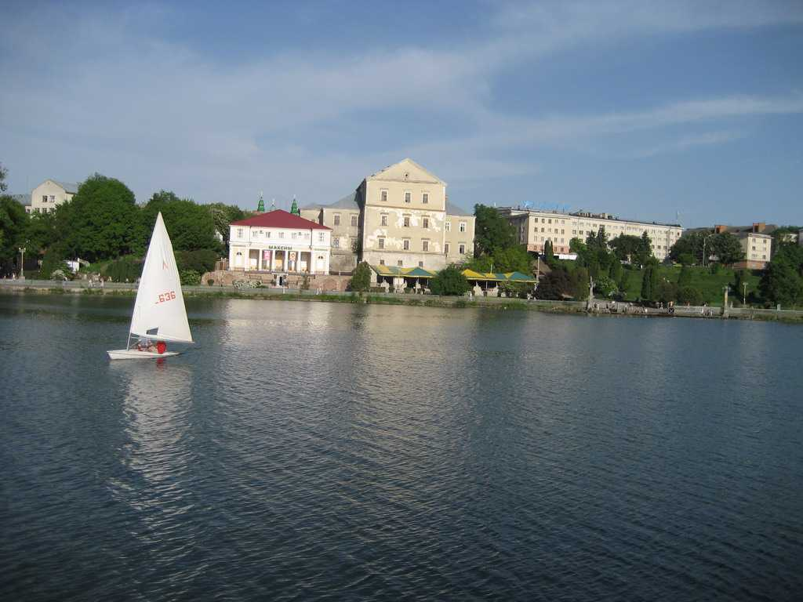
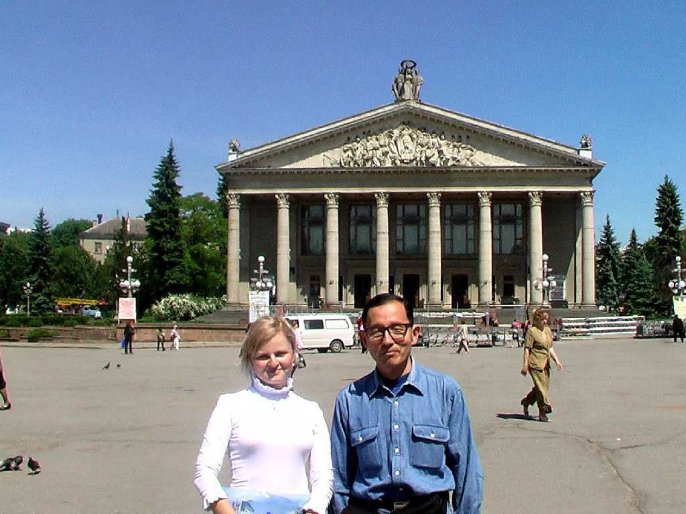

Ternopil Lake
１５４０年セレト川河岸に創られた街で今は人造湖の美しい湖畔の街となっているテルノピル州の州都

May 21 2009 Ternopilskaja Opera and Drama Theater
世界でも美人が多い地域のひとつと言われている彫りの深い顔立ちと透き通るような白い肌の美人が多いウクライナ人 気候と環境によるのか日本の秋田美人と世界のウクライナ美人なのか 四季 気温の変動 湿度 日照時間 標高 食事 住居